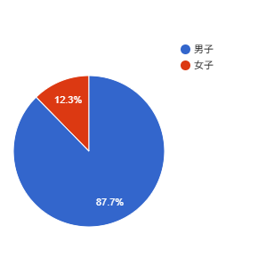

恋愛攻略
男女比
令和7年度の電気通信大学の学生数は3,375人、そのうち男子が2,959人(約88%)、女子が416人(約12%)です。
極端に男子が多く女子が少ないため、男子にとって学内での恋愛はかなり困難なものとなるでしょう。

性格
電通大はオタクや陰キャの集う大学であり、二次元に恋する人、人とあまり話さない人等、恋愛をしようとしなかったり、できなかったりする人がかなり多いです。
その面でも、やはり電通大学内での恋愛は難しいでしょう。
逆に、オタク趣味が合う人であれば、すごく仲良くなれるかもしれません。頑張りましょう。